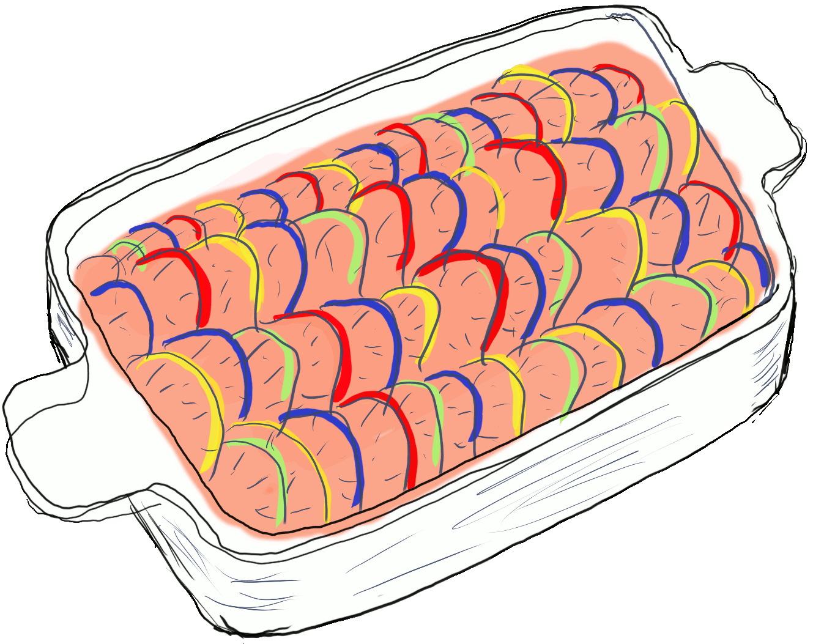

Ingredients:
|

|
Roughly cube the eggplant, put it in a bowl, lightly cover with salt and stir it with your hands. Leave for
about half an hour on a pasta strainer so it drains out liquid.
Slice zucchini into slices wide as a finger and the capsicums into strips wide as a thumb.
In a deep pan heat up 2 tablespoons of olive oil and fry the zucchini until it goes golden on the surface
(about 2,5 minutes each side). When it's ready use a sieve spoon to put all zucchini in a large pot (and
save the rest of the oil).
Add another spoon of olive oil to the pan. Sear the capsicum and when done - add it to the pot.
Rinse the eggplant and dry it up. Add another 2 tablespoons of olive oil to the pan and fry the eggplant
until it goes golden (around 5 minutes). When finished with it - add it to the pot.
Mix tomatoes, 2 spoons of parsley and the thyme in the pan, fry up for about 10 minutes. Add it all to the
pot.
Start the burner under the pot and cook the whole dish for about 10 minutes until the vegetables are cooked,
but not too soft.
Take the pot off the heat, stir in the rest of the parsley and half the basil. Now add salt and pepper and
decorate with the rest of basil.